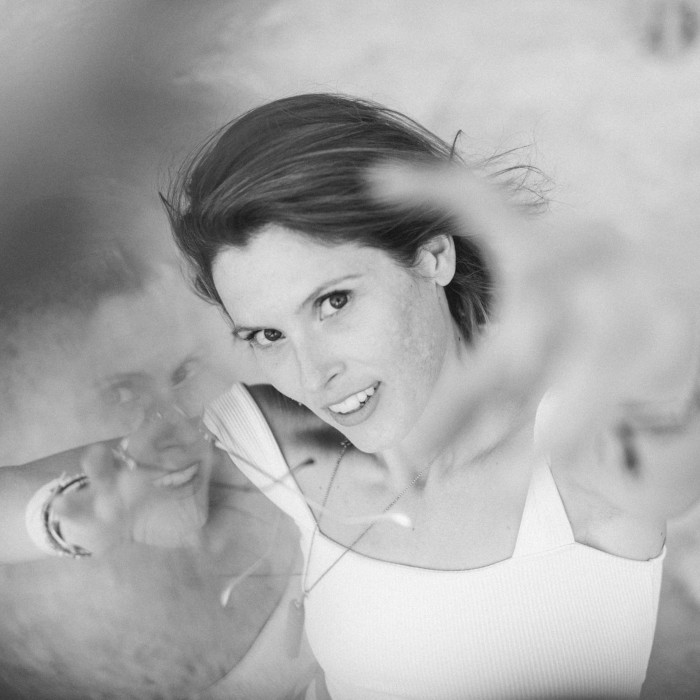

AMBER

Dans nos sacs, on a tous plein de trucs, AMBER, elle a de la musique : son en forme d’amour à donner.
En 97 elle découvre que le son ça se partage avec son album de Daft Punk, et elle oublie de faire ses devoirs en écoutant Homework avec des gens qui bougent dans sa tête.
Depuis elle raconte, avec ses disques et sa clé USB, des histoires à dormir debout, espérant transmettre ce qu’elle a dans la tête pour communier avec les âmes qui s’animent devant elle.
Éclectique : Deep house, synth wave, dub techno, acid trance... Elle creuse deep ce que l’on se cache mais que l’on désire.
Elle réside à la Glittoris et la Nipples, soirées et afters de rave, rêvés par des femmes, pour se donner naissance en réalité.
À Paris elle joue dans toutes les teufs où on a encore envie de danser et de sourire devant tout ce qui nous reste à aimer.
Avec Modestie, elle forme le duo C O N T E N T qui retourne du Dancefloor et qui se plaît irrésistiblement dans la vie.
Alors quand tu la vois vider son sac, sur son bateau Platine, tu regardes tous ces gens autour de toi, et tu sais... Tu sais pourquoi ils sont là.
C O N T E N T
Pas de repos quand on est synchro
En duo dans la vie comme derrière les platines, AMBER et Modestie sont CONTENT.
Sillonnant les dancefloors de Paris depuis près d’une décennie, leur sensibilité et sens du public fusionnent au gré d’une sélection léchée. Énergie contagieuse et regards espiègles. Laissez l’alchimie opérer quelques heures pour obtenir l’effet escompté.
Qu’ils soient lion ou libra, les cages s’ouvrent, les visages s’éclairent et les t-shirts tombent parfois… Souvent.
Les scènes qui s’y sont frottées s’en souviennent encore. De La Station à Concrete, des stages de l’Alter Paname, à ceux de la Nipples, Roue Libre ou Microclimat, la magie n’a pas cessé ces dernières années. Et même les scorpions se sont levés…
Alors, c’est de fêtes privées en raves pour initiés qu’ils ont opéré avec des sets qui défient l’horloge contemporaine.
Pas de pudeur, que de l’amour à donner, nos Mickey et Mallory Knox à nous.
Inaltérables kiffeurs nés taillés pour dancefloor trance-figuré.
MODESTIE
Après avoir mixé sur la grande muraille de Chine lors du YinYang Festival, Modestie rentre en France déterminé à digger et prendre le sujet plus au sérieux.
Utilisant d’abord les quelques vinyles récoltés pendant ses voyages, il agrandit ensuite sa collection, influencé par le label KOMPAKT pour lequel il a un véritable coup de cœur, et s’approprie des pépites solaires au gré de ses écoutes dans les shops.
Il fait ses armes à Paris en résidant au Garage, en jouant à Concrete, et en ridant les decks des collectifs parisiens les plus underground comme Péripate, Nipples, Microclimat, La Toilette, ou encore Positive Altitude. C’est pendant certains de ces événements qu’il forme avec AMBER le duo CONTENT.
L'arrêt brutal de la vie nocturne en 2020 l'amène à découvrir et en apprendre davantage sur la musique électronique puisqu'il entreprend de fouiller des discographies datant des années 80 et 90 : New Beat, Techno, parfois trancy, ou encore ambient.
Une infinité de styles qu'il parcourt pour peaufiner ses playlists et faire vibrer les dancefloors, qu'ils soient moites, décomplexés ou plus posés.